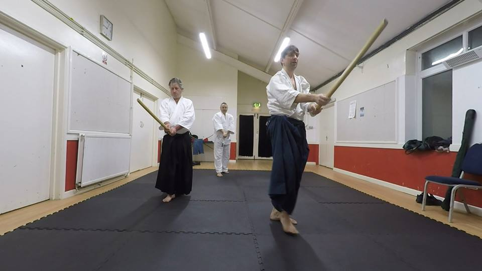

Practise with Us

We practise at Perranwell Community Centre on Sunday evenings from 5pm until 7pm. We are open to all participants who are aged 16 and over. You can come along and try our art with us any time.
Sessions cost £5 but the first session is free. Bring a gi if you happen to have one but otherwise any sportswear that permits free movement is fine. Those who have practised other martial arts will find many similarities and many differences. As long as you are prepared to perform the techniques as shown and help your partners, you should find our techniques interesting and practical.
We use Japanese wooden weapons: the Boken, which is a wooden version of the Japanese sword, and the Jo, which is a short staff. Spare weapons are available to borrow. You can buy your own as and when you feel you want to take Aikido seriously.
Aikido is a physical martial art and as such requires some fitness and agility. In particular ukemi, which is the way we receive techniques by using break-falls and so on, is aerobic and energetic. You can build-up your fitness and skill over time. We will also try to accommodate disabilities wherever possible but the nature of this art is such that an ability to move freely from your centre-of-gravity is necessary.
Here’s a map:
Sometimes we have to cancel a practice, so it’s best to contact us by using this form before you come: